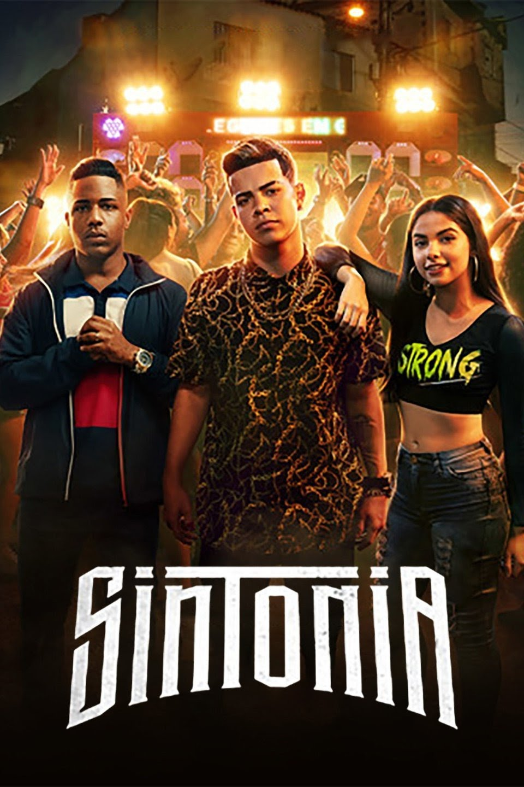
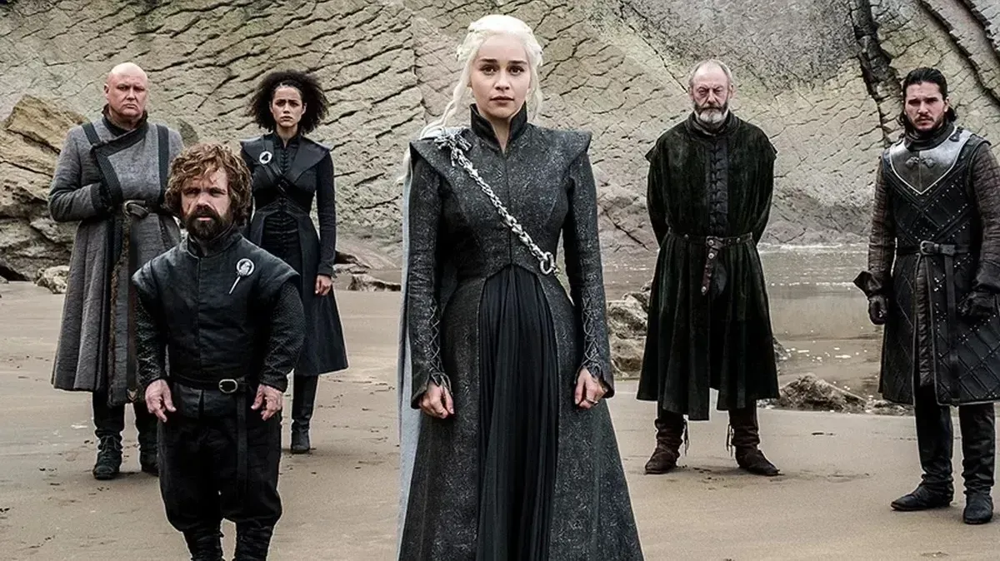

sinopse - Oito ladrões se trancam com reféns na Casa da Moeda da Espanha. Seu líder manipula a polícia para realizar um plano que pode ser o maior roubo da história ou uma missão em vão.
sinopse - Doni, Nando e Rita foram criados juntos na periferia de São Paulo rodeados por funk, drogas, violência e religião. Eles seguem caminhos totalmente diferentes, mas sempre buscam ajuda um no outro.

sinopse - O mutante Geralt de Rívia é um caçador de monstros que luta para encontrar seu lugar em um mundo onde as pessoas, muitas vezes, são mais perversas do que as criaturas selvagens.
sinopse - Sucesso entre os livros mais vendidos, a série de obras "A Song of Ice and Fire", de George R.R. Martin, é levada à tela quando HBO decide navegar a fundo pelo gênero e recriar a fantasia medieval épica. Este é o retrato de duas famílias poderosas - reis e rainhas, cavaleiros e renegados, homens honestos e mentirosos - disputando um jogo mortal pelo controle dos Sete Reinos de Westeros para assumir o Trono de Ferro. A série foi filmada em Malta e no norte da Irlanda, tendo participação do escritor dos livros.
sinopse - Três adolescentes de origem humilde ganham uma bolsa de estudos em um colégio de elite. No lugar, eles enfrentam preconceito, formam laços, se apaixonam e se deparam com um crime violento.
pagina 1